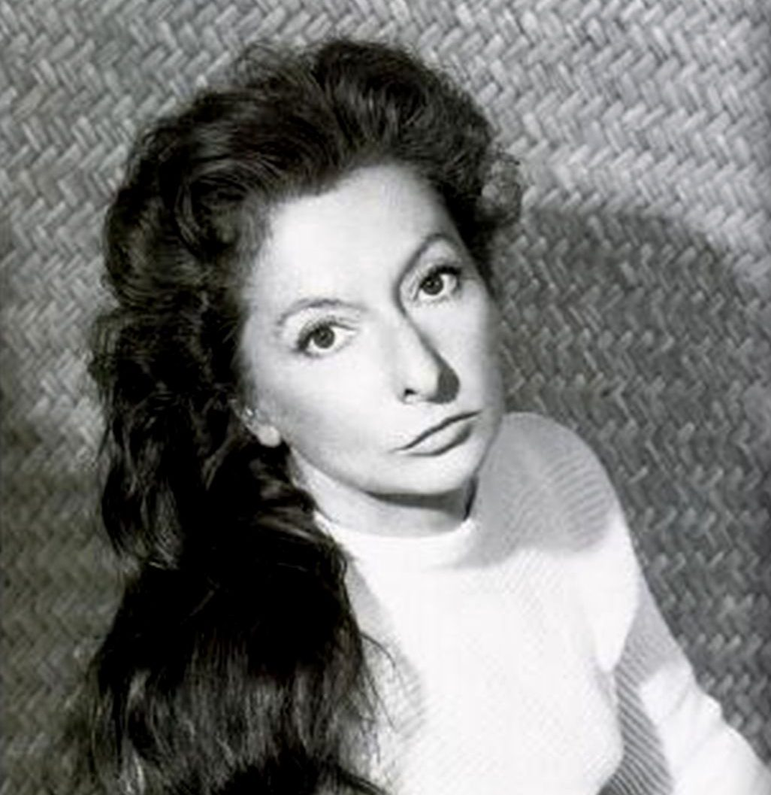

Lilia Carrillo
(Ciudad de México, 1930 - 1974)

Asistió a la Escuela de Pintura, Escultura y Grabado “La Esmeralda” y obtuvo el título de Maestra en Artes Plástica en 1951. En 1953, viajó becada a París donde fue influenciada por las vanguardias internacionales como el cubismo, el surrealismo, el expresionismo abstracto y el informalismo. Su obra se expuso en Washington, Nueva York, Tokio, Lima, Sao Paulo, Madrid, Barcelona, Bogotá y Cuba.
Lola Cueto
(Ciudad de México, 1897 - 1978)

A la edad de 12 años, entró a la Academia de San Carlos. Cuatro años después, ya daba clases de pintura en una escuela para obreros. Los problemas causados por la Revolución Mexicana truncaron el desarrollo de Lola Cueto en la academía mexicana, no obstante cuando estuvo en París desarrolló la técnica de tapicería y los títeres. Por ello, hizo su primera exposición. En 1932 cuando regresó a México regresó a la Academia de San Carlos para estudiar grabado y formó parte de la comunidad intelectual de la época donde también estaba Lupe Marín, Nahui Ollin, Diego Rivera, Dr. Atl, entre otras personalidades.
Celia Calderón
(Ciudad de México, 1921 - 1969)

Es conocida por su obra gráfica, aunque también fue destacada pintora y acuarelista. Estudió en la Escuela Nacional de Artes Plásticas. Su técnica le hizo ganar un lugar como maestra en la Academia a partir de 1946. Obtuvo una beca en el Consejo Británico donde aprendió arte gráfico en la Slade Art School de Londres. Expuso en el antiguo Pekín, ahora Beijing. Su técnica preferida fue la de grabado y litografía y, por ello, fue invitada a la Sociedad Mexicana de Grabadores en 1947 y al Taller de Gráfica Popular en 1952.
Remedios Varo
(España, 1908 – México, 1963)
En 1924 ingresó a la Academia de San Fernando de Madrid donde fue una de las primeras mujeres estudiantes. Formó parte del grupo “Lógicofobista” que intentaba la representación externa de los estados internos del alma. Viajó a Venezuela donde trabajó en publicidad y para el Instituto de Malariología Venezolano donde realizó dibujos detallados de mosquitos. En 1955 presentó su primera exposición colectiva en la Galería Diana. Al año siguiente, expuso por primera vez de manera individual.